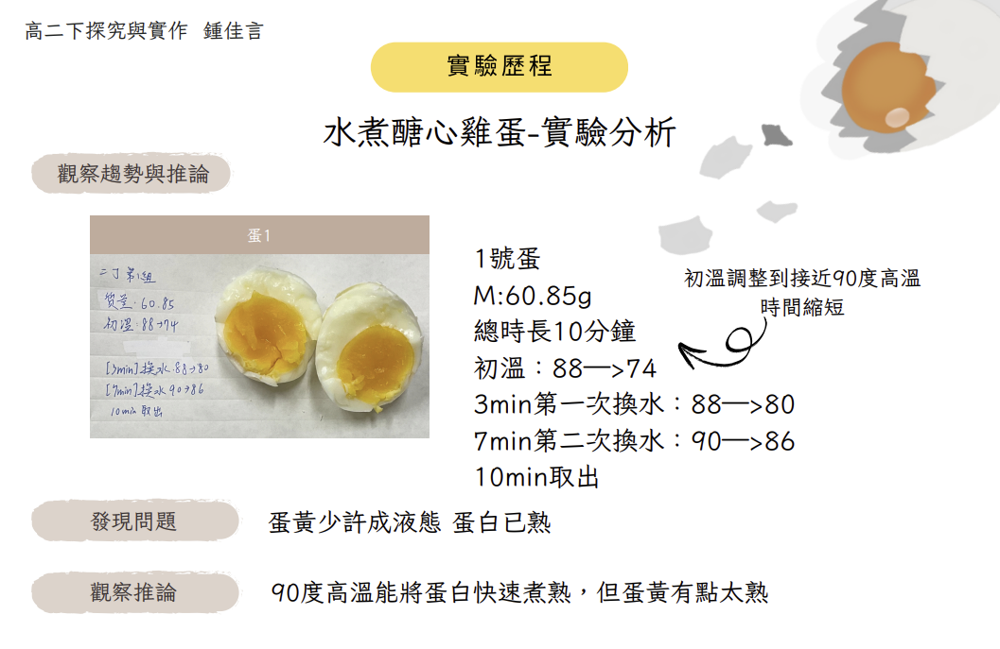
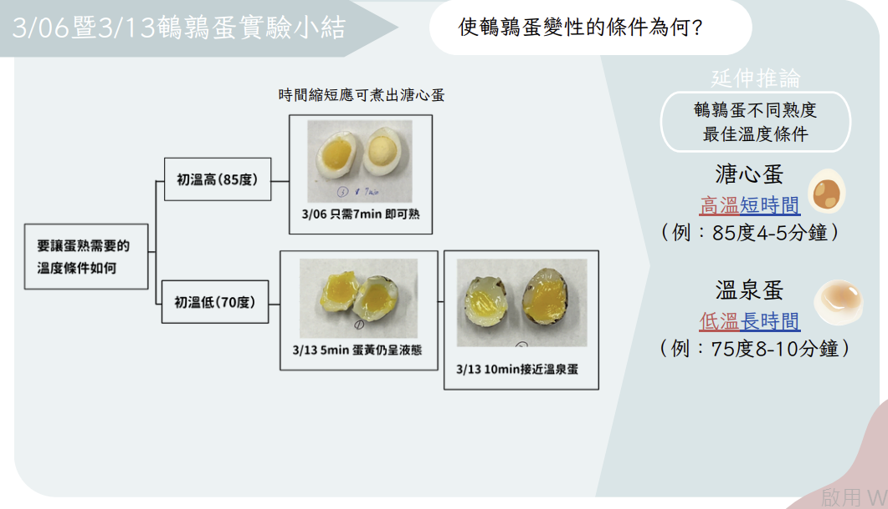
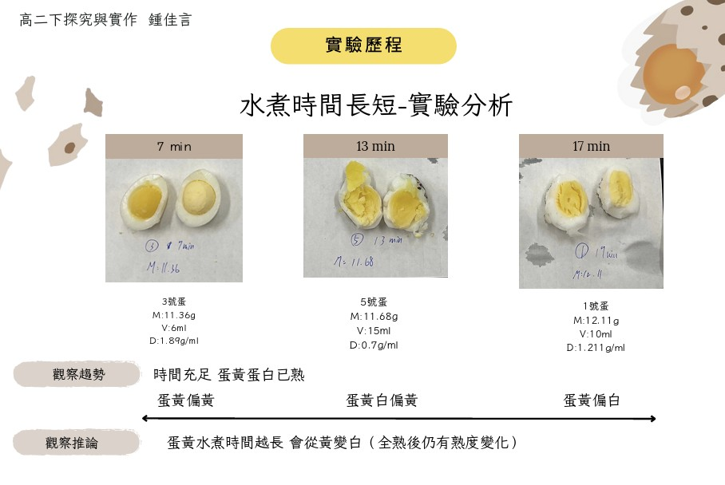
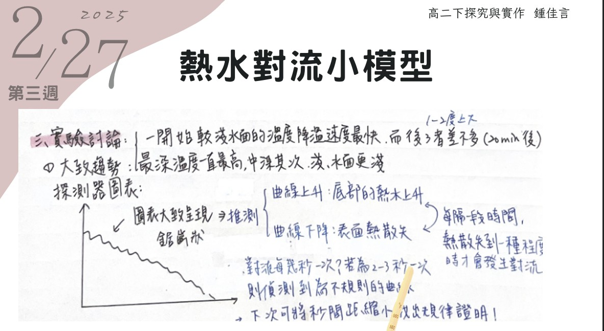
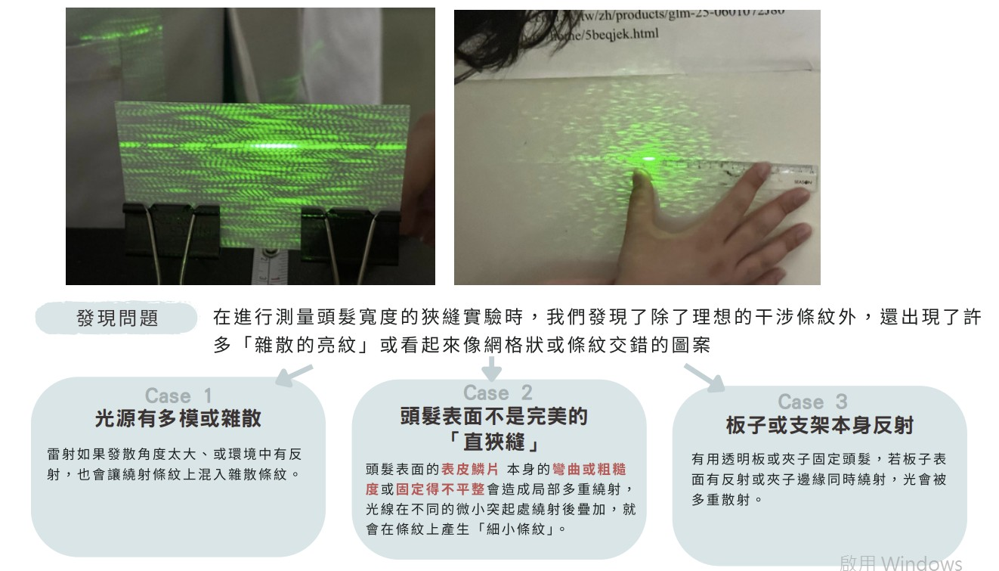
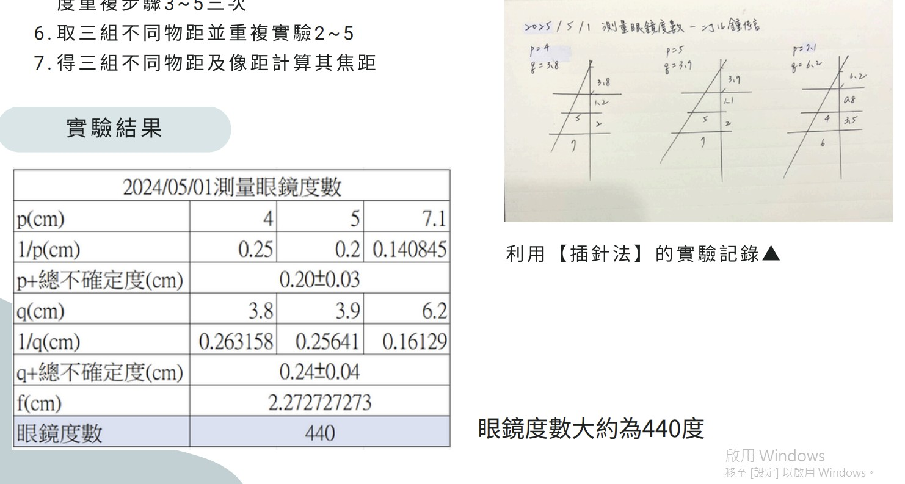
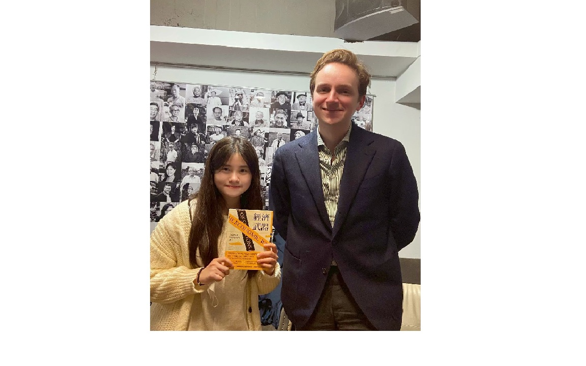
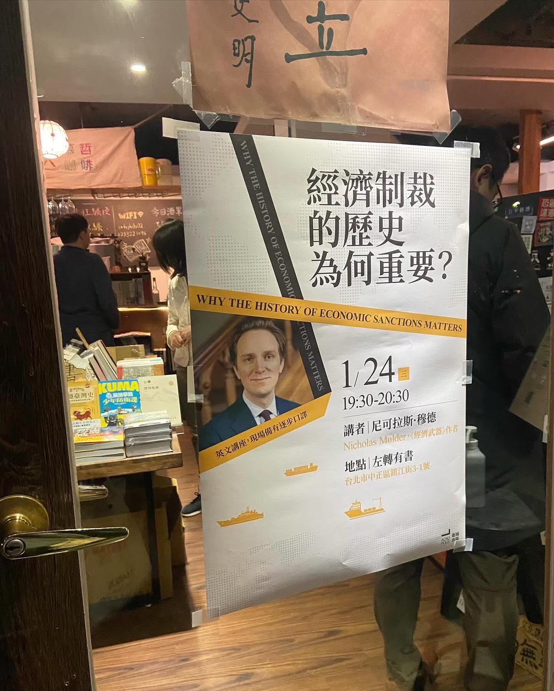
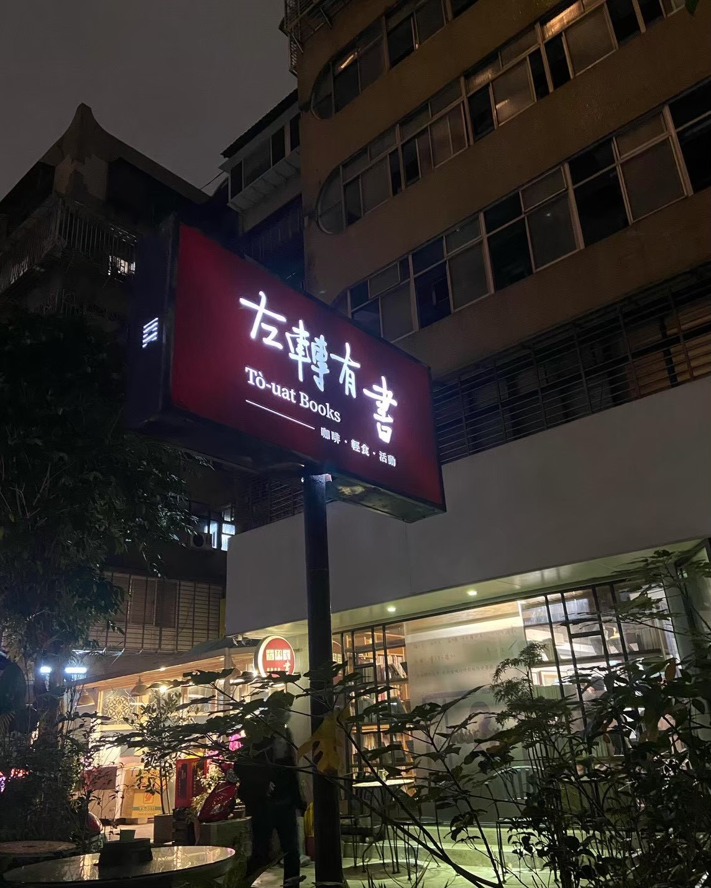

SCIENCE INQUIRY
高二下地科探究 : 蛋之熱傳導




2025年4月，我參與了地科的探究實驗，目的為測試蛋在不同層級間的導熱性以及找出如何使用保溫杯煮出溏心蛋。這項實驗看似並不複雜，但卻在實驗過程中失敗多次，在高溫長時間下，蛋易過熟；而在低溫長時間下，蛋將呈現蛋黃熟但蛋白未完全煮熟。最終得出雞蛋要在高溫90度以上短時間才能呈現溏心蛋。透過這項實驗，我學習到如何從數據數字落差中發掘根本原因，並作出適當調整。
相關資源 / RESOURCES
PHYSICS INQUIRY
高二下物理探究 : 波動光學



2025 年 6 月，我進行了物理波動光學的深度探究。本研究重點在於透過光的干涉與繞射現象，測量微小物質的結構特徵。實驗中利用雷射光照射細髮絲，產生明顯的單狹縫繞射條紋，並根據條紋間距反推計算髮絲直徑。這項過程我不僅提升我的數據分析能力，更增進與組員反覆溝通與協作的能力，此外，我也學習如何使用 Excel 計算數值和繪製圖表，與此我掌握了運用 Excel 基本分析之能力。
相關資源 / RESOURCES
BOOK TALK & ANALYSIS
Nicholas Mulder《經濟武器》新書分享會



出自於好奇中美間經濟制裁之影響程度，以及經濟制裁是否有效阻止俄羅斯停止俄烏戰爭，我閱讀了《經濟武器》並對於作者不同普遍經濟制裁的看法印象深刻，2024 年 1 月於左轉有書書店參與了《經濟武器》新書發表會，過程中 Nicholas Mulder 侃侃而談他對中美、中台及國際局勢的看法。會後，我與 Nicholas Mulder 合影簽書，留下難忘的回憶。